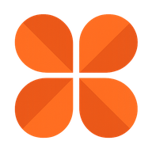
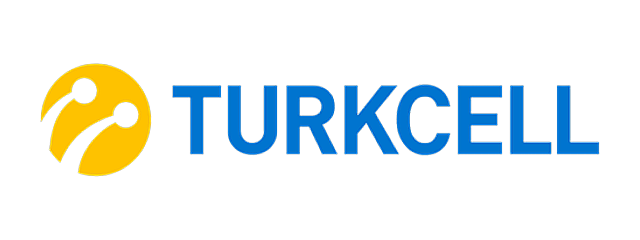
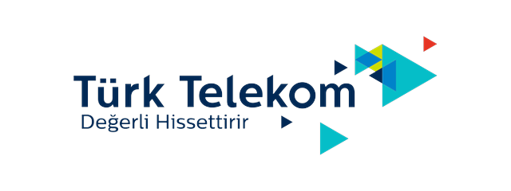
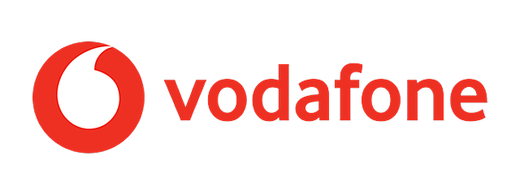
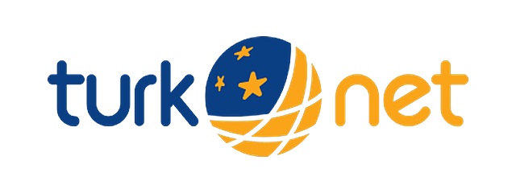
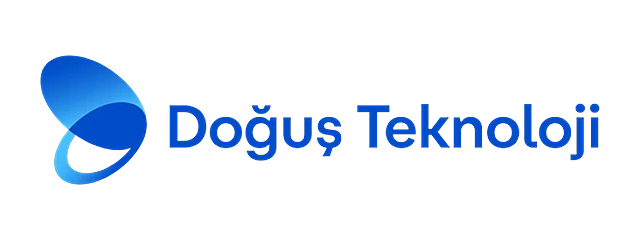
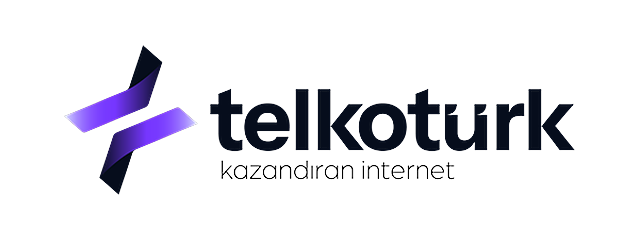
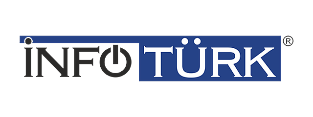
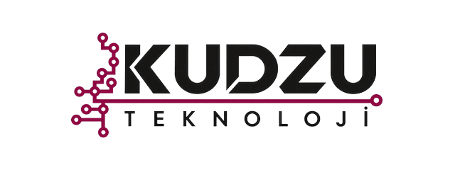
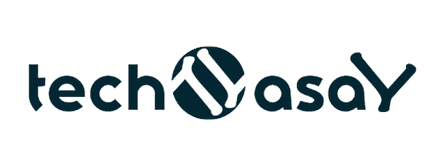

Şeffaflık
Neyin, neden ve ne kadar süreyle kaydedildiğini açıkça anlatırız.
- Örnekleri temsili olarak işaretleriz
- Rakamları kaynağıyla veririz
- Bilmediğimizi uydurmayız
KareCodeBornova, İzmir
Yazılım, ağ erişimi ve yasal kayıt tutma alanında çalışan bir ekibiz. Bu site, işimizin arkasındaki bilgiyi herkesin anlayacağı bir dille paylaşmak için var.
KareCode kimdir?
KareCode, Bornova, İzmir merkezli bir yazılım ve bilişim mühendisliği şirketidir. İş süreçleri ve yönetim sistemleri üzerine çalışır; misafirlerine internet sunan işletmeler için de KCLogger'ı geliştirir.
Oteller, kafeler, yurtlar ve toplu taşıma gibi alanlarda misafir ağları her gün çok sayıda bağlantıya kapı açar. Bu bağlantıların güvenli kurulması, yasal kayıtların doğru tutulması ve kullanıcıların ne olup bittiğini anlaması bizim için aynı işin parçalarıdır.
Şirket kartıBornova · İzmir
Neden varız?
İşletmelerin misafir ağlarını güvenli ve yasal gerekliliklere uygun biçimde işletmesini kolaylaştırıyoruz. Kullanıcıların bu ağlarda bilinçli karar verebilmesi için anlaşılır bilgi sunuyoruz. Hayalimiz, siber güvenliğin yalnızca uzmanların konuştuğu bir konu olmaktan çıktığı; kurumların şeffaf, kullanıcıların bilgili olduğu bir dijital ortam.

KareCode ekibiÇalışma ilkeleri
Kaydırdıkça kartlar üst üste yığılır; her ürün kararında ve her içerikte bu üçüne geri dönüyoruz.
Neyin, neden ve ne kadar süreyle kaydedildiğini açıkça anlatırız.
Teknik terimleri sade bir dille açıklar, uygulanabilir öneriler sunarız.
Araçlarımızın yalnızca yetkili kişilerce ve yasal çerçevede kullanılmasını savunuruz.
İş ortakları
Altyapı, iletişim ve teknoloji alanındaki iş ortaklarımızla birlikte işletmelere uçtan uca çözüm sunuyoruz.
9iş ortağı









Yolculuk
Tarihler yerine aşamalarla anlatıyoruz; her aşama bir öncekinin üzerine kuruldu.
Aşama 01 · Ağ
Misafirlerine internet sunan işletmelerin erişim ve kayıt ihtiyaçlarına odaklandık.
Aşama 02 · Ürün
Hotspot erişimini, 5651 uyumlu loglamayı ve merkezi yönetimi tek üründe topladık.
Bugün · Farkındalık
Captive portal ve dijital ayak izi gibi konuları herkesin anlayacağı bir dille anlatıyoruz.
KCLogger, misafir ağınız ya da bu sitedeki içerikler hakkında bize yazın; size en kısa sürede dönelim.
Bize yazın